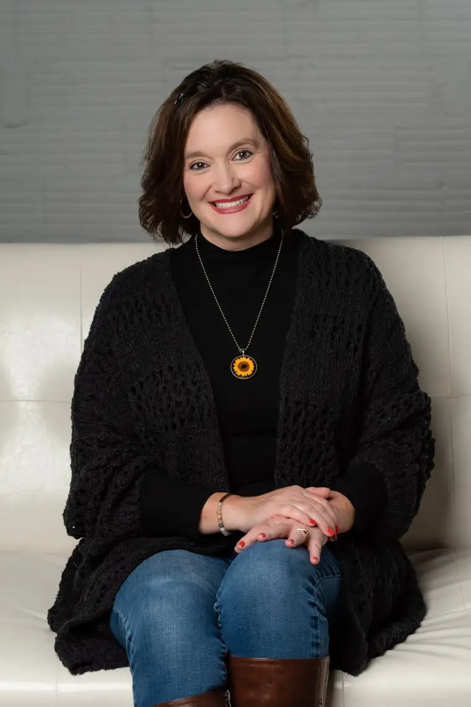

It began like many Twitter conversations I have dared dip into, and progressed similarly, too. One minute, we were debating the merits (or lack thereof) of Planned Parenthood, our country’s largest abortion provider, and the next, Jesus himself.
I can almost predict the trajectory. At the end of almost every conversation involving death, we bump into the God of life.
The topic of abortion awakens the conscience, for there’s no neutral position here. The contents of a pregnant womb is either a human being or something inconsequential and deep down even the most ardent abortion supporter knows the truth.
Please hold that thought until the end, when I’ll make my final, most important point.
In this case, the thread started with an article about a newly announced candidate for the Fargo School Board , who, as the headline noted, happens to be the state director for Planned Parenthood North Central States.

I’ve written before about my firm distrust of Planned Parenthood to caution the unknowing. Too many continue to buy into the organization’s finely tuned talking points about how it “helps” women, but I can’t get past how, in every abortion, someone dies.
Nor can I ignore how the organization’s founder, Margaret Sanger, wanted to rid society of unwanted people, or “weeds.” Discarding the unwanted of our world remains a pointed goal of today’s Planned Parenthood. Some online research will lead to a trail of testimonies of former employees who, realizing this, made a hasty exit.
However, my Twitter contender had the verbiage down pat: “I prefer a woman’s bodily autonomy over what might eventually develop into a human child.” Note the hidden truth in these well-crafted words. “…what might eventually develop…” Unless, of course, we do away with the child first.
Inevitably, the charge came. How could I be taken seriously, given my Christian, and specifically Catholic, worldview? The truth is hard to hear, so the biggest weapons come out to silence the challenger.
And I get it. The Body of Christ has not behaved well at times. Sin affects every human group, unequivocally. Where humans exist, sin exists. Only one who walked among us was sinless. Thankfully, he still guides that imperfect, broken Body of Christ.
But despite human failings, Jesus remains the antidote to the sadness and suffering of this fallen world. And unlike his Church, Planned Parenthood cannot make the claim that its center is pure. Instead, if you take a peek inside, you’ll glimpse its dark goal: to “get rid of the problem” by ending a human life.
An organization that promotes death as a solution can never be a healthy influence for our children, no matter the virtue of any of its employees. The rot at the center ultimately seeps out and reaches the innocent.
Are we willing to risk letting such an organization, no matter how well packaged, influence our precious children? That is what is at stake here, and those of you with the most stake in it will get to decide.
[For the sake of having a repository for my newspaper columns and articles, I reprint them here, with permission, a week after their run date. The preceding ran in The Forum newspaper on May 2, 2022.]